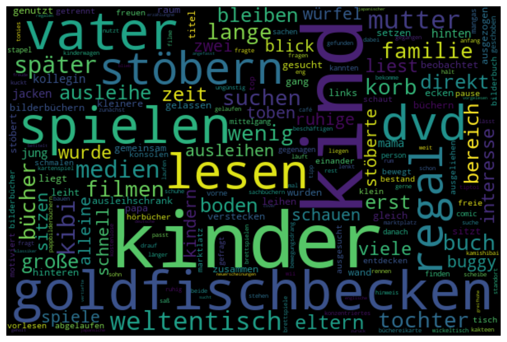
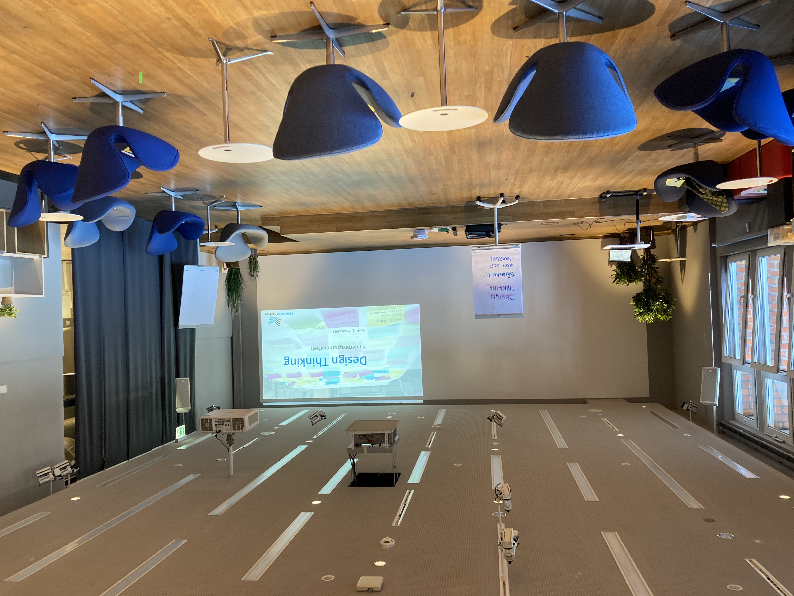
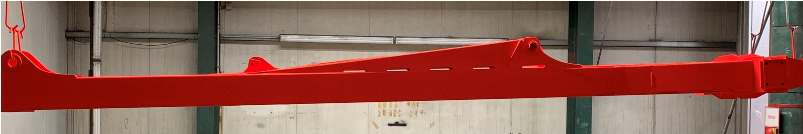
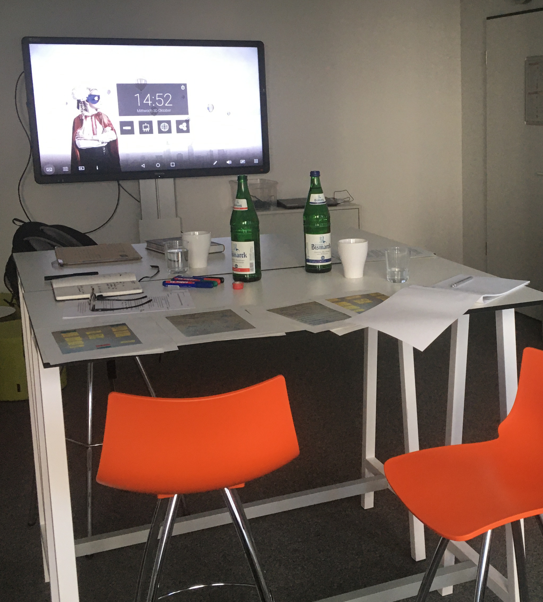
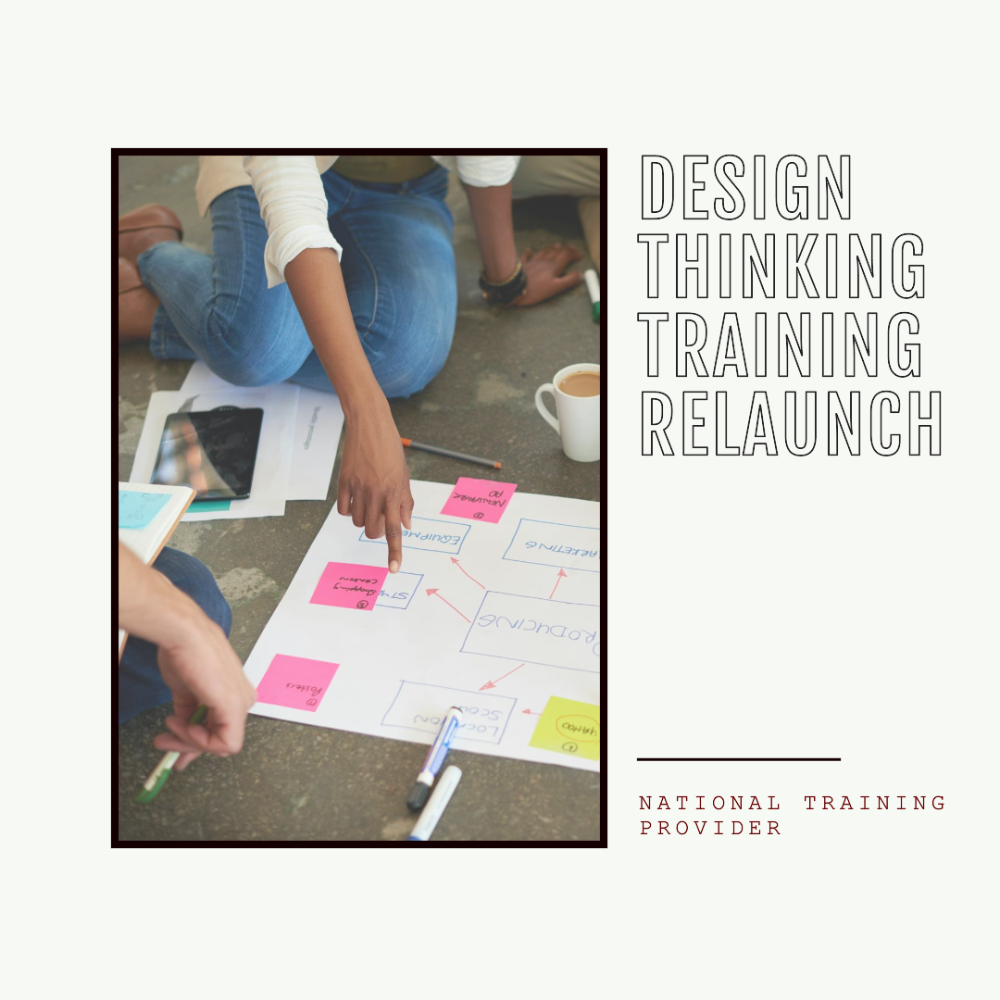

Sebastian Sukstorf
Home
Portfolio
Projekte
Vorträge
Publikationen
Projekte
Projektverzeichnis von Beratungsprojekten

‘Partizipative Kundenanalyse und Aktivierung zur Neugestaltung eines öffentlich genutzten Raums’
Partizipative Neugestaltung und Kundenaktivierung in der Kinderbibliothek (Kibi) der Zentralbibliothek
Neugestaltung der Kibi: Fokus auf Kundenbindung, Raumoptimierung und Serviceverbesserung.
Sep 30, 2022
Sebastian Sukstorf
Organisation und Durchführung von Workshops zur ‘Lernraumgestaltung und Lernatmosphäre’
Projektleiter für Design Thinking Workshops zur Prototypentwicklung in der Erwachsenenbildung
Workshops zur Lernraumgestaltung mit Design Thinking, Erstellung von Anforderungskarten und Stimmungsbildern für Bildungsräume.
Sep 2, 2022
Head of Learning Space & Culture (Leiter Personalentwicklung) als Interim Manager
Transforming Talent Development: Innovating Onboarding and Skill Management as Interim Head of Learning Space & Culture
Transforming onboarding & skill management. Interim leader shaping learning culture & programs.
Jun 30, 2022
Sebastian Sukstorf
Teamcoaching für Steuerberaterkanzlei / Steuerberatung
Begleitung und Coaching zur Weiterentwicklung des Kanzleiteams
Begleitung der Kanzleileiter zur Teamweiterentwicklung, Konkretisierung von Maßnahmen für einzelne Mitarbeiter, und Unterstützung sowie Coaching der Kanzleileitung in ihrer Rolle.
Jun 15, 2022
Sebastian Sukstorf
Reorganisation und Coaching in Schulpsychologischer Beratungsstelle / Verwaltung
Optimierung und Coaching für die Beratungsstelle
Überprüfung und Anpassung des Re-Organisationskonzepts der Beratungsstelle sowie Business Coaching der Leitung bei Führungsaufgaben.
Jun 10, 2022
Sebastian Sukstorf

Design Thinking Workshop zur ‘Vorbereitung des Arbeitsteams für eine kollaborative und kreative Gestaltung der Kinderprogrammarbeit’
Vorbereitung des Arbeitsteams zur kollaborativen Gestaltung der Kinderprogrammarbeit
Stärkung der Kinderprogrammarbeit der Zentralbibliothek Hamburg durch Design Thinking und Teamtraining.
Apr 14, 2022
Sebastian Sukstorf
Unterstützung bei der Reorganisation einer IT-Abteilung eines Verbandes
Neuausrichtung der IT-Organisation zur Effizienzsteigerung und Vorbereitung auf zukünftige Digitalisierungsvorhaben
Neuausrichtung der IT mit ITIL, Team-Coaching und Digitalisierungsstrategie für zukunftsorientierten Verband.
Feb 14, 2022
Sebastian Sukstorf
Trainerfortbildung – Führung und systemische Organisationsentwicklung an einer Hochschule
Digitale Strategieentwicklung und transformationale Führung: Ein Fortbildungsprogramm für Polizeihochschuldozenten
Dozentenfortbildung: Digitale Strategie und Führung für Polizeihochschule.
Jun 9, 2021
Sebastian Sukstorf

‘Führung und Organisation’ der Metall-Chemie Holding GmbH
Optimierung der Unternehmensstruktur: Ein Weg zu klar definierten Prozessen und effektiver Kommunikation
Metall-Chemie GmbH optimiert Struktur für klare Prozesse und bessere QM/QS.
Jun 19, 2020
Sebastian Sukstorf

Reorganisation und Neupositionierung universitärer Weiterbildung
Organisatorische Zielentwicklung und Führungskräfte-Coaching in der Geschäftsführung
Konzeptionelle Entwicklung des Zielbildes und Workshops mit der Geschäftsführung für organisatorische Fragen. Team-Workshops zur Leitbildentwicklung und Rollenklärung. Szenario-Entwicklung und Argumentationsstrategien für politische Entscheidungsprozesse. Business Coaching für den Geschäftsführer bei Führungsaufgaben.
May 28, 2020
Sebastian Sukstorf

Relaunch und Weiterentwicklung eines Design Thinking Trainingskonzepts
Modernisierung und Vielseitigkeit: Design Thinking Schulung für führenden deutschen Bildungsanbieter
Design Thinking Schulung für führenden deutschen Bildungsanbieter überarbeitet und modernisiert. Konzeptentwicklung, Trainerunterlagen, Präsenz- und Online-Training
Jul 31, 2019
Sebastian Sukstorf
No matching items